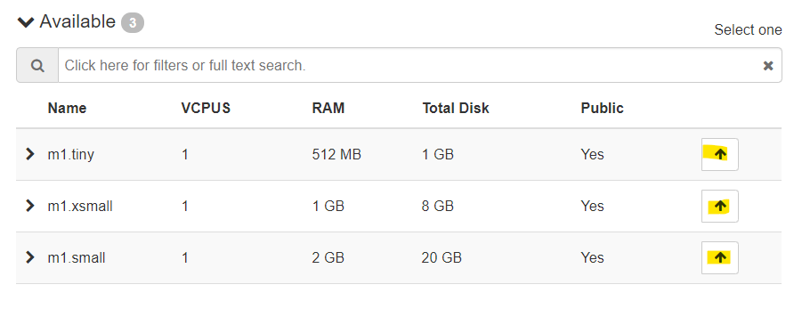
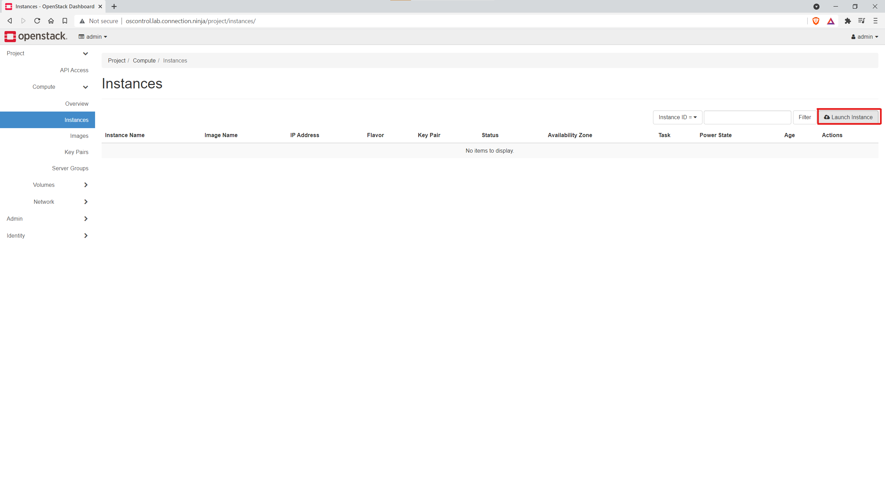
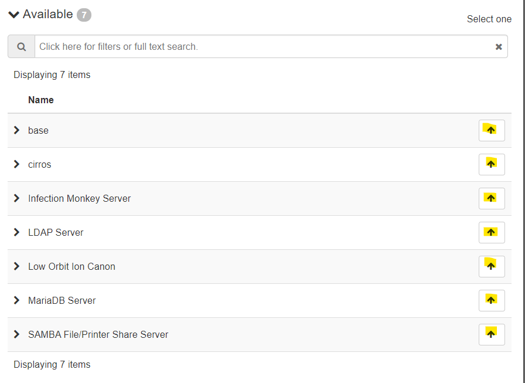

What is Openstack?
Openstack is a cloud platform - it orchestrates a series of services in order to provide a unified method of turning bare metal assets into a cohesive cloud.
This system is not a fully implemented openstack environment- rather, it is an install of the Canonical Microstack environment - which is prepacked with the components below.
Openstack services
- Nova: The compute service/Hypervisor within openstack. This is responsible for orechestrating virtual machines
- Glance: The Imaging services withing openstack. This provides managing resources for computer images
- Cinder: The block storage system for openstack. This creates and manages the persistent storage for the instances
- Keystone: The authentication services
- Neutron: The Network manager for openstack, creates and manages virtual networks for the machines within the Openstack environment.
- Horizon: The web interface for the openstack environment. Can manage all component apps (virtual instances, networks, and images)
Full openstack installations can contain many additional services, which can be found on the official Openstack website here
For first time access
Consult with a student or staff administrator (see the "contacts" page in the base directory for more information) to get your openstack account setup.
How to access Openstack
- Head over to http://localhost/ (if logged into the main server) or https://oscontrol/ if on a remote machine.
- Login using the credentials that you've created with the student or staff administrator
- You're in!
Creating instances
- Head over to the "Compute" menu within the "Project" drop down on the right
- Select "Instances" from the "Compute" menu
- On the right, there should be an option to "Launch Instance"
- Within the "Details" tab of the launch menu, Enter a name for the instance. Include your first initial and last name, plus whatever you want for to be the name of the instance
- Click "Next" or select the "Source" tab from the left panel.
- Choose the image that you want to instantiate.
- Select "NO" for
- Click "Next" or select the "Flavor" tab
- Assign a flavor based on the size (tiny is minimal and can really only run cirros; xsmal can run most lubuntu images; small is good for server options 
- Click "Next" or select the "Networks" tab from the left panel.
- Select the "OIT-LEARNING" network
- Click "Launch Instance"

EXAMPLE: TAlvord - SQL Test
